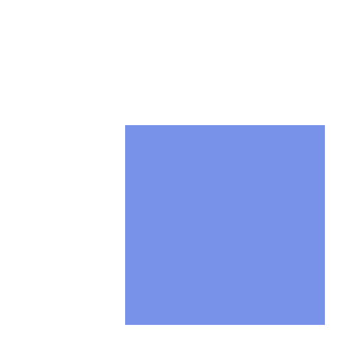
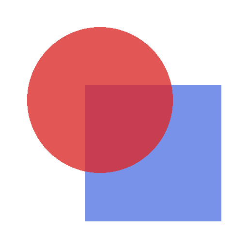
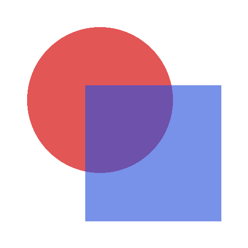

Lecture 5. How a program names its values, and how far each name reaches.
Programming Languages Lab · University of Pisa
Vincenzo Ciancia, CNR-ISTI
vincenzo.ciancia@isti.cnr.it · github.com/vincenzoml/PLDW
Lecture 4, exercises 1 and 2
evaluate_string("2^3") # 8
evaluate_string("2*3") # 6
evaluate_string("2^3^2") # ?
The assignment, from Lecture 4
domains.py, add "^" to the OP terminal and bind it to power in create_initial_env.evaluate did not need any change.2^3^2, and why? Is it what a mathematician expects?
OP: "+" | "-" | "*" | "/" | "%" | "^"
env = bind(env, "^", power)
evaluate_string("2^3") # 8
evaluate_string("2^3^2") # 64
Two lines, and evaluate does not change.
2^3^2 is 64: like every operator of our grammar, ^ groups from the left, so it is (2^3)^2.
For \( 2^{3^2} = 512 \), write 2^(3^2).
evaluate_string("ten * 2") # 20
evaluate_string("ten + ten") # 20
evaluate_string("eleven") # ValueError
The assignment, from Lecture 4
ten to 10 in the initial environment: it is a DVal too.IDENTIFIER terminal, a rule for it in mono, a node Var(name) and its case in evaluate.Var first, then the code.+ + 1 and ten(1, 2) do? Which stage reports each error?
mono: ground | var | paren
var: IDENTIFIER
IDENTIFIER: /[a-zA-Z_][a-zA-Z0-9_]*/
@dataclass(frozen=True)
class Var:
name: str
case Tree(data="var",
children=[Token(type="IDENTIFIER", value=name)]):
return Var(name=name)
A name is one more kind of mono: it can stand wherever a number can.
IDENTIFIER is a letter or _, followed by letters, digits and _: the same rule as for Python names.
The parse tree has a node var, which becomes a Var in the AST.
\( ⟦x⟧\rho = \rho(x) \)
case Var(name):
meaning = lookup(env, name)
if callable(meaning):
raise ValueError(
f"{name} is an operator, not a value")
return meaning
The value of a name is what the environment says it stands for.
The check is the mirror of the one for operators: a name used as a value must stand for a number.
+ + 1 and ten(1, 2) are syntax errors: the parser rejects them, before any environment is involved.
ten in the environment?
def create_initial_env() -> Environment:
...
env = bind(env, "ten", 10)
return env
evaluate_string("ten * 2") # 20
evaluate_string("eleven") # ValueError: Undefined identifier: eleven
Only the Python program that runs the interpreter. The program written in our language can use names, but cannot create them.
Today the language gets a construct that adds a name to the environment: let.
The code of this lecture is in code/lesson-05/: binding.py and scoping.py.
Binding
(17 * 23 + 4) * (17 * 23 + 4) - (17 * 23 + 4)
let n = 17 * 23 + 4 in n * n - n
The same expression written three times is three chances to make a mistake, and three times the work.
The second line computes it once, gives the result a name, and uses the name.
It also says something to the reader: these three are the same thing.
let, in three parts
let x = 3 in x + 1
│ │ └── the body: where x can be used
│ └── the definition: its value is given to x
└── the name
The value of the whole expression is the value of the body, computed in an environment where x stands for 3. Here, 4.
The syntax comes from ISWIM, a language designed by Peter Landin in 1966, through ML. Haskell, OCaml and F# still write it this way.
BINDING
let x = 3 in ... makes a new environment where x stands for 3. It is valid in the body, and nowhere else. Nothing that existed before is changed.
ASSIGNMENT
x = 3 in Python changes what x stands for, from now on. Code that read x before and reads it again later sees two different values.
Our language has binding only. A name, once bound, stands for the same value in all of its body.
Assignment needs memory, which can change while the program runs: Lecture 6.
Syntax
let
grammar = r"""
?expr: let | arith
let: "let" IDENTIFIER "=" expr "in" expr
?arith: bin | mono
bin: arith OP mono
mono: ground | var | paren
paren: "(" expr ")"
ground: NUMBER
var: IDENTIFIER
NUMBER: /[0-9]+/
OP: "+" | "-" | "*" | "/" | "%"
IDENTIFIER: /(?!(let|in)\b)[a-zA-Z_][a-zA-Z0-9_]*/
%import common.WS
%ignore WS
"""
The rules of Lecture 4 move one level down, into arith. Above them, an expression is a let or an arithmetic expression.
The definition and the body of a let are expr: they can contain other lets.
"let", "=" and "in" are anonymous strings: they do not appear in the parse tree.
let x = 1 in x + 2 3
(let x = 1 in x) + 2 3
let x = 1 in (x + 2) 3
2 + let y = 3 in y syntax error
2 + (let y = 3 in y) 5
The body goes as far to the right as it can. In the first line it is x + 2, not x.
The left side of bin is an arith, so it cannot be a let: let x = 1 in x followed by + 2 is not a way to read the first line. There is one parse tree only.
A let inside arithmetic needs parentheses.
OCaml accepts 2 + let y = 3 in y. We chose a smaller grammar with no ambiguity; the price is some parentheses.
IDENTIFIER: /(?!(let|in)\b)[a-zA-Z_][a-zA-Z0-9_]*/
Without the first part, let and in would also match IDENTIFIER, and let in = 3 in in would be a program.
(?!...) means "not followed by": a name cannot start with the word let or the word in. \b is the end of a word, so inside and let1 are still names.
Python has 35 reserved words: if, def, lambda, ... Try lambda = 3 in Python.
@dataclass(frozen=True)
class Let:
name: str
definition: Expression
body: Expression
type Expression = Number | Var | BinaryExpression | Let
case Tree(data="let",
children=[Token(type="IDENTIFIER", value=name),
definition, body]):
return Let(name=name,
definition=transform_parse_tree(definition),
body=transform_parse_tree(body))
One new node, with the three parts of a let.
The name is a string, not an expression: let 3 = x in ... is not a program.
let
x
mono
ground 1
bin
mono
var x
+
mono
ground 2
Let(name='x',
definition=Number(value=1),
body=BinaryExpression(op='+',
left=Var(name='x'),
right=Number(value=2)))
The parse tree of let x = 1 in x + 2, from parser.parse(...).pretty(), and the AST built from it.
Semantics
let means\( ⟦x⟧\rho = \rho(x) \)
\( ⟦\mathtt{let}\ x = e_1\ \mathtt{in}\ e_2⟧\rho = ⟦e_2⟧\big(\rho[x \mapsto ⟦e_1⟧\rho]\big) \)
let is in.This is the first equation where the environment on the right is not the one on the left. Until today, \( \rho \) was passed down unchanged.
def evaluate(ast: Expression, env: Environment) -> EVal:
match ast:
case Number(value):
return value
case Var(name):
meaning = lookup(env, name)
if callable(meaning):
raise ValueError(
f"{name} is an operator, not a value")
return meaning
case BinaryExpression(op, left, right):
... # as in Lecture 4
case Let(name, definition, body):
value = evaluate(definition, env)
return evaluate(body, bind(env, name, value))
The Let case is the equation, line by line.
Compute the definition in env. Build a new environment with bind. Compute the body in it.
This is the use of bind announced in Lecture 4: env is not changed, and the code after the let still sees it as it was.
| equation | Python |
|---|---|
| ⟦x⟧ρ = ρ(x) | case Var(name): ... lookup(env, name) |
| ⟦e₁⟧ρ | value = evaluate(definition, env) |
| ρ[x ↦ ⟦e₁⟧ρ] | bind(env, name, value) |
| ⟦e₂⟧(ρ[x ↦ ...]) | evaluate(body, bind(...)) |
As in Lecture 4, each equation is one case, and the recursive calls are on the children of the node.
let x = 1 in let y = x + 1 in x * y
evaluate(Let('x', 1, Let('y', x + 1, x * y)), ρ0)
evaluate(Number(1), ρ0) 1
ρ1 = bind(ρ0, "x", 1)
evaluate(Let('y', x + 1, x * y), ρ1)
evaluate(x + 1, ρ1) 2
ρ2 = bind(ρ1, "y", 2)
evaluate(x * y, ρ2)
lookup(ρ2, "x") 1
lookup(ρ2, "y") 2
multiply(1, 2) 2
\( \rho_0 \) is the initial environment, with the five operators. Each let builds a new environment on top of the previous one.
x * ylookup(ρ2, "x") goes from ρ2 to ρ1, which answers 1. lookup(ρ2, "*") goes all the way to ρ0.
The same picture as in Lecture 4. Then the chain was built by Python code; now it is built by the program.
Scope
let x = 3 in x + 1
─ ─────
binds scope of x
The scope of a binding is the part of the program where the name refers to it. For let x = e₁ in e₂, the scope of x is e₂, and only e₂.
The equation says it: \( \rho[x \mapsto ...] \) is used for \( e_2 \) and for nothing else.
The scope is a part of the text of the program. It can be found by reading the program, without running it.
(let x = 1 in x) + x
The second x is outside the parentheses, so outside the body: it is not in the scope of the let.
Undefined identifier: x
When the let is done, evaluate goes back to the environment it had, which does not contain x. Nothing needs to be removed.
let x = x + 1 in x Undefined identifier: x
let x = 1 in let x = x + 10 in x * 2 22
In let x = x + 1 in ..., the x of the definition is computed in \( \rho \), before x is bound.
If an outer x exists, the definition uses it: in the second line, the inner x is 1 + 10.
A let whose definition sees its own name is a recursive binding. Recursive functions need it; we will come back to it.
In let x = 1 in let x = x + 10 in x * 2 there are two bindings of x. In x * 2, the inner one wins.
The outer binding is shadowed: it still exists, but in the inner body it cannot be reached by its name.
lookup stops at the first environment that knows the name. Shadowing needs no code of its own.
let x = 5 in (let x = 1 in x) + x 6
(let x = 2 in x * x) + (let x = 3 in x * x) 13
In the first line the inner x is 1 inside the parentheses; after them, x is 5 again.
In the second line the two x are unrelated: each let builds its own environment from the initial one.
With assignment, x = 1 inside the parentheses would destroy the 5. With binding, the old environment is still there.
x + y free: x, y
let x = 1 in x + y free: y
let x = x in x free: x
let y = 2 in 3 free: none
An occurrence of a name is bound if it is in the scope of a let for that name; otherwise it is free.
The free names are those the expression needs from outside: its value depends on what the environment says about them.
In the third line, the first x after = is free, the last one is bound.
def free_variables(ast: Expression) -> frozenset[str]:
match ast:
case Number(_):
return frozenset()
case Var(name):
return frozenset({name})
case BinaryExpression(_, left, right):
return free_variables(left) | free_variables(right)
case Let(name, definition, body):
return (free_variables(definition)
| (free_variables(body) - {name}))
A function with the same structure as evaluate: one case per node, recursion on the children.
The Let case follows the scope: the definition counts in full, the body without the bound name.
It does not need an environment and does not compute anything: it only reads the text. A program with no free names is closed, and can be run in the initial environment without Undefined identifier errors.
Scoping
Our let computes the definition first, then the body: it is eager. Another choice: bind the name to the definition itself, not computed, and compute it each time the name is used.
let z = 1 / 0 in 7
Eager: Division by zero. The other way: 7, because z is never used.
This is the idea behind the lazy evaluation of Haskell. The code of this part is in scoping.py.
let x = 5 in
let f = x + 10 in
let x = 42 in
f
When f is used, its definition x + 10 is computed. Which x?
STATIC · 15
The x visible where f was defined: the environment of its let.
DYNAMIC · 52
The x visible where f is used: the environment at that moment.
@dataclass(frozen=True)
class Delayed:
definition: Expression
env: Environment
type DVal = EVal | Operator | Delayed
type Environment = Callable[[str], DVal]
case Let(name, definition, body):
return evaluate(body,
bind(env, name, Delayed(definition, env)))
A new denotable value: a definition not computed yet, with the environment of its let.
The Let case no longer calls evaluate on the definition: it stores it.
The denotable values change, the expressible values do not: an expression still computes an integer. A Delayed is something a name can stand for, not a result.
static
case Var(name):
match env(name):
case Delayed(definition, saved_env):
return evaluate_static(definition,
saved_env)
...
dynamic
case Var(name):
match env(name):
case Delayed(definition, _):
return evaluate_dynamic(definition,
env)
...
The only difference is the environment used for the definition: the one saved in the Delayed, or the current one.
The rest of the two evaluators is identical.
\( ⟦\mathtt{let}\ x = e_1\ \mathtt{in}\ e_2⟧\rho = ⟦e_2⟧\big(\rho[x \mapsto (e_1, \rho)]\big) \)
static: \( ⟦x⟧\rho = ⟦e⟧\rho' \) where \( \rho(x) = (e, \rho') \)
dynamic: \( ⟦x⟧\rho = ⟦e⟧\rho \) where \( \rho(x) = (e, \_) \)
The pair \( (e, \rho') \) is code together with the environment it was written in: the same thing as a closure in Lecture 4.
Dynamic scoping does not need the second component. It is there only to keep one Delayed for both evaluators.
| program | eager | static | dynamic |
|---|---|---|---|
let x = 5 in let f = x + 10 in let x = 42 in f | 15 | 15 | 52 |
let a = 1 in let f = a + 10 in let a = 100 in f | 11 | 11 | 110 |
let x = 1 in let y = x * 2 in y + y | 4 | 4 | 4 |
let z = 1 / 0 in 7 | error | 7 | 7 |
let f = x + 1 in let x = 2 in f | error | error | 3 |
let x = 1 in let x = x + 1 in x | 2 | 2 | RecursionError |
Output of python3 scoping.py. Eager and static agree whenever eager has no error: in our language, computing a definition earlier or later gives the same number.
let x = 1 in let x = x + 1 in x
The body x stands for Delayed(x + 1). Its definition is computed in the current environment, where x stands for Delayed(x + 1) again. And so on, until Python stops it.
With dynamic scoping, a definition can see itself, by accident. With static scoping, the inner x + 1 sees the outer x, as the text suggests.
Python: static
x = 1
def f():
return x
def g():
x = 2
return f()
g() # 1
bash: dynamic
x=1
f() { echo $x; }
g() { local x=2; f; }
g # 2
In Python, x in f is the one visible where f is written. In bash, it is the one of whoever called f.
Early Lisp and Emacs Lisp scope dynamically too. Almost every language designed since the 1980s scopes statically.
x in g changes what f prints.free_variables tells, before running, which names a closed program needs. With dynamic scoping a name can be found at run time in a caller.The difference really matters with functions, which are code that runs later, far from where it was written. Functions come in a later lecture, with closures as their values.
Summary
| decision | alternative | why |
|---|---|---|
| binding | assignment | no memory needed; a name means one thing in its whole scope |
let at the top level of an expression | let anywhere, as in OCaml | one parse tree only; some parentheses |
| reserved words | keywords usable as names | a simpler parser, clearer programs |
| definition outside its scope | recursive binding | let x = x + 1 uses the outer x |
| eager | delayed | each definition computed once |
| static scoping | dynamic scoping | names can be understood by reading the text |
A program can now add names to the environment, with let. Two new equations, two new cases in evaluate, and bind as it was in Lecture 4.
The scope of a name is a part of the text. Static scoping keeps it that way; dynamic scoping makes it depend on the run.
Names cannot change value yet. Lecture 6, state and commands, adds memory: a name stands for a location, and the content of the location can change.
Exercises
let a = 2 in let b = a * a in let a = b + 1 in a * b
let x = 3 in (let y = x in y * x) + (let x = 1 in x)
let n = 10 in let m = n % 3 in let n = n / m in n - m
(let p = 4 in p) * (let q = p in q)
Level 1 of 6
let binds it, or that it is free.evaluate_string and free_variables in binding.py.
run("let x = 1 in x + y")
# ValueError: free names: y
run("let x = 1 in x + 1") # 2
Level 2 of 6
run(text): parse, call free_variables, and evaluate only if the program is closed.
let x = 1, y = 2 in x + y 3
let x = 1, y = x + 1 in x * y ?
Level 3 of 6
evaluate to allow several bindings in one let.Lets?
let s = 1+2+3+4+5+6+7+8+9 in s * s * s
Level 4 of 6
scoping.py, count how many times add is called by the eager and by the static evaluator on this program.Delayed definition is computed the first time it is used, and never again. Then let z = 1/0 in 7 must still give 7.Delayed now changes after it is built. Is evaluate_static still pure?
"ab" * 3 ababab
"programming"[0:7] program
upper("ciao") + nl + reverse("ciao")
CIAO
oaic
let s = "Pisa" in s + nl + ("-" * length(s))
Pisa
----
let w = "na" in (w * 8 + nl) * 2 + upper("batman")
Level 5 of 6 · a longer one
A new language, built from binding.py: a program computes a text.
| construct | meaning |
|---|---|
"..." | a text, written between double quotes |
a + b | the two texts, one after the other |
a * n | a repeated n times |
reverse(a), upper(a), lower(a) | backwards, in capitals, in small letters |
nl | a text with one newline in it |
a[i:j] | the characters from position i to j, excluded, as in Python |
let x = e₁ in e₂ | as today |
EVal and DVal. Numbers are needed for * n and [i:j]: are they expressible values, or only allowed in those places?STRING terminal, a rule for name(expr), a rule for expr[expr:expr]. Operators group from the left, as today: use parentheses.reverse, upper and lower take one argument, the operators of Lecture 4 take two. How does evaluate tell them apart, and what happens with nl(1) or reverse alone?"a" * "b", "a" + 3, upper(3), "abc"["a":2]: each must give a message that speaks about your language, not a Python TypeError.length(a). Which parts of the program did you change?A solution is in code/lesson-05/text.py.
Level 6 of 6 · take home
let to the language of your project, from exercise 5 of Lecture 4.+ to something else?let in your domain. Did they change from today's?Exercise 7 · extra



Images are a good domain for a small language. This exercise writes, in Python, the primitives such a language would need: load, combine, save.
The next slides give the library and some examples. The code is in code/images/images.py, with the two images, 512 × 512.
# once, in the terminal of VS Code
# pip install pillow
from pathlib import Path
from PIL import Image, ImageDraw, ImageOps
The standard library of Python has no module for images. Pillow is the one almost everybody uses.
Three of its modules are enough: Image to load, save and combine, ImageDraw to draw shapes, ImageOps for ready-made transformations.
pathlib is in the standard library: a Path is a file name that knows how to join folders, HERE / "red_circle.png". Pillow is now in requirements.txt.
HERE = Path(__file__).parent
def load(path: Path) -> Image.Image:
with Image.open(path) as image:
return image.convert("RGBA")
def save(image: Image.Image, path: Path) -> None:
image.save(path)
circle = load(HERE / "red_circle.png")
print(circle.size, circle.mode)
print(circle.getpixel((206, 206)))
print(circle.getpixel((10, 10)))
(512, 512) RGBA
(220, 40, 40, 200)
(0, 0, 0, 0)
convert("RGBA") gives every image the same form, whatever the file was: four numbers per pixel.
with closes the file when the block ends; convert has already made a copy in memory.
save chooses the format from the extension: .png keeps transparency, .jpg does not.
| pixel | R, G, B | alpha | meaning |
|---|---|---|---|
(220, 40, 40, 200) | red | 200 | red, slightly transparent |
(40, 80, 220, 160) | blue | 160 | blue, more transparent |
(0, 0, 0, 0) | any | 0 | nothing: fully transparent |
(255, 255, 255, 255) | white | 255 | white, fully opaque |
Each number goes from 0 to 255. The fourth one, alpha, says how much the pixel covers what is behind it: 0 not at all, 255 completely.
In the slides, the transparent parts are drawn on a grey checkerboard.
SIZE = 512
def red_circle() -> Image.Image:
image = Image.new("RGBA", (SIZE, SIZE), (0, 0, 0, 0))
draw = ImageDraw.Draw(image)
draw.ellipse((56, 56, 356, 356), fill=(220, 40, 40, 200))
return image
def blue_square() -> Image.Image:
image = Image.new("RGBA", (SIZE, SIZE), (0, 0, 0, 0))
draw = ImageDraw.Draw(image)
draw.rectangle((176, 176, 456, 456), fill=(40, 80, 220, 160))
return image
Image.new makes a transparent image; ImageDraw draws on it.
The four numbers of ellipse and rectangle are the corners of a box: left, top, right, bottom. The circle and the square overlap in the middle.
The files are already in code/images/; these functions are how they were made.
def over(front: Image.Image,
back: Image.Image) -> Image.Image:
return Image.alpha_composite(back, front)
over(circle, square).getpixel((300, 300))
# (194, 46, 66, 235)
alpha_composite puts the second image on top of the first. over takes them in the order we read them: front, then back.
Where both are present, the front lets a part of the back show through. With alpha between 0 and 1:
\( \alpha = \alpha_f + \alpha_b (1 - \alpha_f) \)
The order matters: over is not commutative. The two images on the left differ only in the middle.
def beside(left: Image.Image, right: Image.Image) -> Image.Image:
result = Image.new("RGBA",
(left.width + right.width,
max(left.height, right.height)),
(0, 0, 0, 0))
result.paste(left, (0, 0))
result.paste(right, (left.width, 0))
return result
def mirror(image: Image.Image) -> Image.Image:
return ImageOps.mirror(image)
def fade(image: Image.Image, factor: float) -> Image.Image:
r, g, b, a = image.split()
a = a.point(lambda v: round(v * factor))
return Image.merge("RGBA", (r, g, b, a))
beside makes an image wide enough for both and pastes them in. above, in the file, does the same vertically.
mirror flips left to right. fade splits the four channels, multiplies alpha by factor, and puts them back.
point applies a function to every pixel of a channel: a function passed as a value, as in Lecture 4.
paste changes the image it is called on. That is why beside pastes onto a new image, and never onto left or right.
Then over, beside, mirror and fade are pure functions: the images they receive are not changed, and the same arguments give the same image.
Extra · Python only
python3 code/images/images.py and look at the results in code/images/out/.rotate(image, degrees) and grayscale(image), keeping the transparency. Look for them in Image and ImageOps.beside and above, build a 2 × 2 grid: the circle, its mirror, the square, the square faded to half.over associative? Compare over(a, over(b, c)) and over(over(a, b), c) pixel by pixel, with a third image of your own.